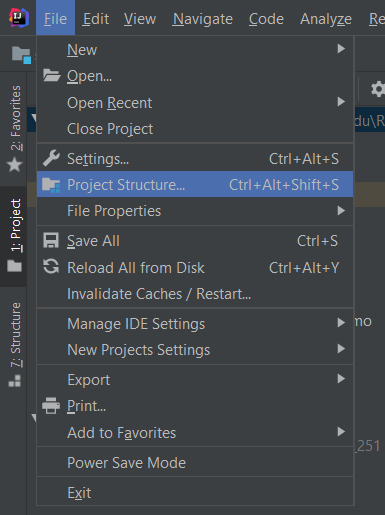
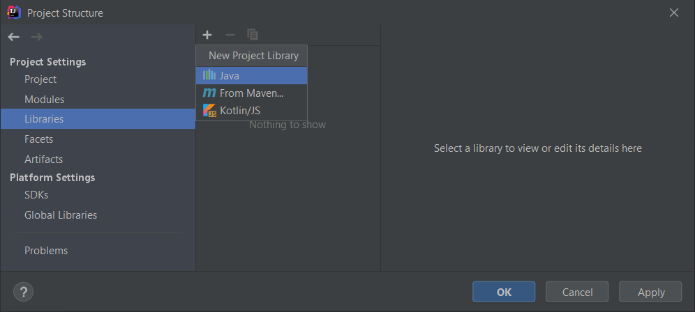
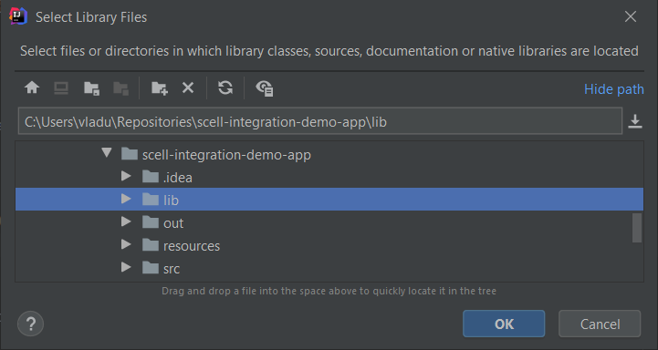
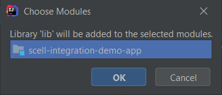
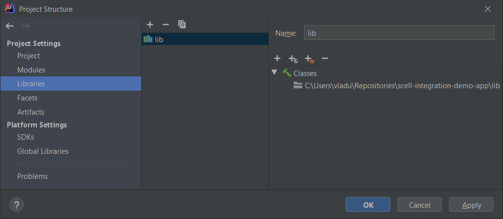

Quick Start with IntelliJ IDEA
How to Add SCell Component into Custom JavaFX Project using IntelliJ IDEA
To add the SCell component to your JavaFX application it is need to extract the distribution package and copy the entire lib folder into the root of the JavaFX project. Then we should include these libraries in classpath of our application. In case of Intellij IDEA, we can achieve this via Project Structure:
-
Go to File -> Project Structure (or use hotkey Ctrl + Alt + Shift + S)
 -
Choose Libraries, then click on the New Project Library button or (use hotkey Alt + Insert)
 -
Select the lib folder and click OK
 -
Choose Modules dialog will be shown, just click OK there
 -
The output should be like this:

Now you should be able to use the SCell component in your application see the JavaDoc for details.